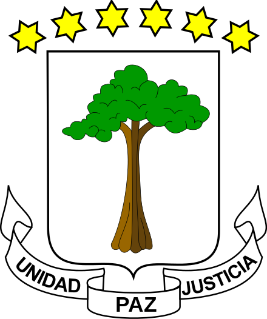

Equatorial Guinea, officially the Republic of Equatorial Guinea is a country located on the west coast of Central Africa, with an area of 28,000 square kilometres (11,000 sq mi). Formerly the colony of Spanish Guinea, its post-independence name evokes its location near both the Equator and the Gulf of Guinea. Equatorial Guinea is the only sovereign African state in which Spanish is an official language. As of 2015, the country had an estimated population of 1,222,245.
Equatorial Guinea consists of two parts, an insular and a mainland region. The insular region consists of the islands of Bioko (formerly Fernando Pó) in the Gulf of Guinea and Annobón, a small volcanic island which is the only part of the country south of the equator. Bioko Island is the northernmost part of Equatorial Guinea and is the site of the country's capital, Malabo. The Portuguese speaking island nation of São Tomé and Príncipe is located between Bioko and Annobón. The mainland region, Río Muni, is bordered by Cameroon on the north and Gabon on the south and east. It is the location of Bata, Equatorial Guinea's largest city, and Oyala, the country's planned future capital. Rio Muni also includes several small offshore islands, such as Corisco, Elobey Grande, and Elobey Chico. The country is a member of the African Union, Francophonie, OPEC and the CPLP.
The Equatorial Guinean flag consists of four main colors and the National Emblem. These four colors are green, white, red and blue, which represent the historical, cultural, economical and social status in the country.
The National Emblem of Equatorial Guinea is a simbol of the most important resources Equatorial Guinea has, at the center of the Emblem, there is a tree in the country known as Ceiba, labeled by three important words which are UNIDAD, PAZ Y JUZTICIA which mean in English is Unity, Peace and Justice. Above the three we can see six stars, these stars represent the six main territories in Equatorial Guinea, which are Bioko Island, Rio Muni (the mainland), Annobón Island, Corisco, Elobey Grande and Elobey Chico. These last three are islands located just next to the mainland, reason being geographically are considered as part of the litoral province, which is one of the four provinces in the Equatorial Guinea mainland.